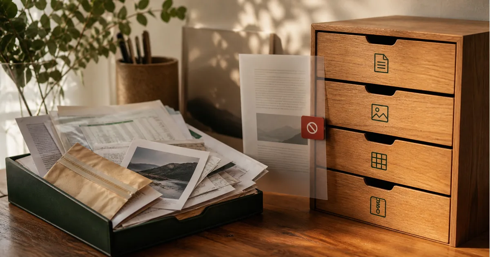
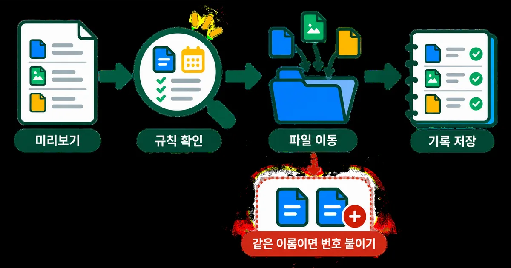
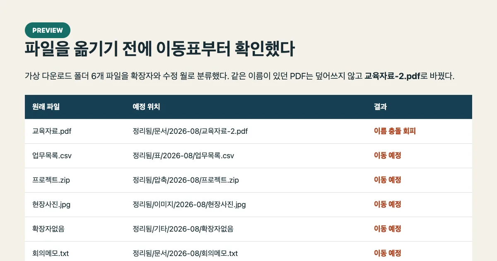
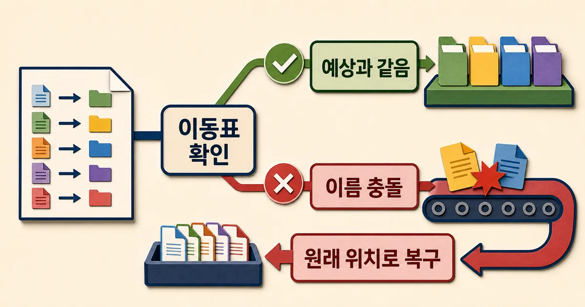

2026. 8. 22 (토) · 약 10분
다운로드 폴더는 잠깐 방심하면 PDF, 이미지, 압축 파일이 한 화면에 뒤섞인다. 확장자별로 옮기는 스크립트는 금방 만들 수 있지만, 같은 이름의 파일을 덮어쓰거나 잘못 분류한 뒤 되돌릴 수 없다면 수동 정리보다 위험하다. 그래서 실제 문서 대신 임시 폴더에 여섯 개의 가짜 파일을 만들고, 이동 전 미리보기부터 이름 충돌 처리, 이동 기록, 원상복구까지 한 번에 시험했다.

업무자동화 실험
실행 기록 · Python 공식 문서 · 2026. 8. 22
다운로드 폴더를 안전하게 자동 정리하는 Python 실험
pathlib로 확장자와 경로를 다루고 shutil.move로 파일을 옮기되, 미리보기·이름 충돌 방지·manifest 원상복구를 더해 실제 임시 폴더에서 검증했다.
정리보다 먼저 되돌릴 방법을 정했다
다운로드 폴더 정리는 자동화 예제로 자주 등장한다. 확장자를 읽어 PDF는 문서 폴더, PNG는 이미지 폴더로 옮기면 끝처럼 보인다. 하지만 실제 파일에서는 같은 이름이 이미 있거나, 수정 월이 예상과 다르거나, 실행 도중 일부만 옮겨질 수 있다. 그래서 이번 실험의 완료 기준은 ‘분류 성공’이 아니라 ‘이동 전 결과를 볼 수 있고, 덮어쓰지 않으며, 같은 기록으로 원상복구되는가’로 잡았다.
실제 다운로드 폴더는 건드리지 않았다. 임시 폴더에 보고서.pdf, 교육자료.pdf 두 개, 사진.png, 압축.zip, 메모.txt처럼 성격이 다른 여섯 개 파일을 만들고 수정 시각도 서로 다른 월로 설정했다. 목적지는 문서·이미지·압축·기타 아래의 YYYY-MM 폴더다.

pathlib로 이름과 목적지를 먼저 계산한다
pathlib.Path는 파일명, 확장자, 상위 경로를 문자열을 직접 자르지 않고 다룰 수 있게 해 준다. suffix는 마지막 확장자를 돌려주므로 .tar.gz처럼 여러 접미사를 한 묶음으로 보고 싶다면 suffixes도 함께 고려해야 한다. 여기서는 PDF·문서, PNG·JPG·이미지, ZIP·압축처럼 작은 규칙표를 두고 나머지는 기타로 보냈다.
CATEGORY = {
'.pdf': '문서', '.docx': '문서', '.xlsx': '문서',
'.png': '이미지', '.jpg': '이미지', '.jpeg': '이미지',
'.zip': '압축'
}
def destination_for(path, root):
category = CATEGORY.get(path.suffix.lower(), '기타')
month = datetime.fromtimestamp(path.stat().st_mtime).strftime('%Y-%m')
return root / category / month / path.name중요한 점은 이 함수가 파일을 옮기지 않는다는 것이다. 전체 파일의 원본과 예상 목적지를 먼저 계산해 화면에 보여 주면, 잘못된 분류 규칙을 실제 이동 전에 찾을 수 있다. 미리보기와 실행이 같은 destination_for 함수를 사용해야 확인한 결과와 실제 동작도 어긋나지 않는다.
같은 이름은 덮어쓰지 않고 번호를 붙였다
shutil.move는 대상이 디렉터리인지, 같은 파일 시스템인지에 따라 rename 또는 복사 후 삭제를 사용한다. 이미 존재하는 목적지의 처리도 운영체제와 파일 형태에 따라 기대와 달라질 수 있다. 자동 정리에서는 라이브러리의 암묵적 동작에 맡기지 않고 이동 전에 직접 충돌을 검사하는 편이 안전하다.
충돌 이름을 확정하고 이동표에 남긴다
def unique_destination(target):
if not target.exists():
return target
n = 2
while True:
candidate = target.with_name(f'{target.stem}-{n}{target.suffix}')
if not candidate.exists():
return candidate
n += 1실험 폴더에는 문서/2026-08/교육자료.pdf를 미리 만들어 충돌을 일부러 만들었다. 새 교육자료.pdf는 원본을 덮어쓰지 않고 교육자료-2.pdf로 이동했다. 파일명이 바뀌었다는 사실도 원본 경로와 최종 경로 쌍으로 manifest에 기록했다.
여섯 개 파일을 실제로 옮겼다가 모두 되돌렸다

실행은 seed, preview, apply, rollback 네 단계로 나눴다. preview에서는 여섯 개 목적지와 한 건의 이름 충돌을 확인했다. apply는 여섯 개를 이동하고 manifest.json을 썼다. rollback은 manifest를 역순으로 읽어 여섯 개를 모두 원래 위치로 되돌렸다. 마지막 preview에서 처음과 같은 여섯 개가 다시 보이는 것까지 확인했다.
| 검증 항목 | 예상 | 실제 |
|---|---|---|
| 대상 파일 | 6개 | 6개 |
| 이름 충돌 | 기존 파일 보존 | 교육자료-2.pdf로 이동 |
| 이동 기록 | 원본·목적지 6쌍 | manifest.json에 6쌍 |
| 원상복구 | 6개 모두 복구 | 6개 모두 원래 위치 확인 |
manifest는 성공한 이동만 즉시 기록한다
모든 이동이 끝난 뒤 한 번에 기록하면 네 번째 파일에서 실패했을 때 앞의 세 파일을 찾기 어렵다. 실제 적용에서는 파일 하나를 옮긴 직후 원본과 목적지를 기록하고 안전하게 저장해야 한다. 복구는 마지막 이동부터 역순으로 수행해야, 서로 이름이 바뀐 경우에도 충돌 가능성을 줄일 수 있다.

{
"moves": [
{"from": "다운로드/교육자료.pdf",
"to": "정리됨/문서/2026-08/교육자료-2.pdf"}
]
}실제 폴더에서는 범위를 더 작게 시작한다
이번 fixture는 일반 파일만 다뤘다. 심볼릭 링크, 패키지 파일, 숨김 파일, 다운로드 중인 .crdownload, 접근권한이 다른 파일, 외장·네트워크 디스크는 별도 규칙이 필요하다. 다른 디스크로 옮길 때는 단순 rename이 아니라 복사 후 원본 삭제가 될 수 있으므로 용량과 중단 복구를 함께 확인해야 한다.
- 처음에는 최근 7일·PDF만처럼 범위를 좁혀 미리보기한다.
- 숨김 파일과 다운로드 중인 임시 파일은 기본 제외한다.
- 이름 충돌은 덮어쓰기 대신 번호 붙이기를 기본값으로 둔다.
- 이동 직후 원본·목적지·시각을 manifest에 기록한다.
- 외장·네트워크 경로는 복사 완료와 해시 확인 뒤 원본을 지운다.
- 일주일 동안은 자동 삭제 규칙을 넣지 않고 이동만 관찰한다.
실제 적용에서 한 가지 규칙을 더 둔다면 정리 대상 파일의 안정 시간을 확인하는 편이 좋다. 브라우저가 내려받는 중인 파일은 이름뿐 아니라 크기도 계속 바뀐다. 마지막 수정 후 10분이 지나지 않은 파일을 건너뛰면 완료되지 않은 다운로드를 옮기는 일을 줄일 수 있다. 클라우드 동기화 폴더라면 동기화 상태 파일도 제외해야 한다. 그리고 manifest 자체가 정리 대상에 다시 들어가지 않도록 기록 폴더는 입력 폴더 밖에 둔다. 이 작은 예외들이 있어야 매일 반복 실행해도 새 파일만 처리하고, 이미 정리한 결과를 다시 움직이지 않는다.
분류가 애매한 파일은 억지로 추측하지 않고 기타 폴더에 남기는 편이 낫다. 파일명 키워드나 문서 내용까지 읽어 세밀하게 분류할 수도 있지만, 규칙이 복잡해질수록 오분류 이유를 설명하고 되돌리기 어렵다. 먼저 확장자와 월처럼 사람이 눈으로 검증할 수 있는 기준으로 시작하고, 기타 폴더에서 반복적으로 나타나는 유형만 새 규칙으로 승격하면 자동화가 실제 사용 습관을 따라 천천히 자란다.
주기 실행을 붙이고 싶다면 macOS launchd나 Windows 작업 스케줄러보다 먼저 스크립트 자체를 여러 번 실행해도 같은 파일을 다시 옮기지 않는지 확인한다. 자동화 빈도는 편의보다 관찰 가능성이 우선이다. 하루 한 번 실행해 manifest와 실패 로그를 보는 것부터 시작하면 문제가 생긴 범위를 좁히기 쉽다.
파일 정리 자동화의 안전장치는 분류 규칙이 아니라, 실행 전에 볼 수 있고 실행 뒤에 되돌릴 수 있다는 사실이다.
참고한 자료
파일 정리 자동화에서 중요한 것은 얼마나 많이 옮겼는지가 아니라 잘못 옮겼을 때 원래 자리로 돌아올 수 있는지다. 이번 실험은 이동 전 목록을 보여 주고, 같은 이름에는 번호를 붙이며, 실제 이동 경로를 manifest.json에 남겼다. 여섯 개 파일은 모두 예상 위치로 이동했고 같은 기록으로 다시 원상복구됐다. 실제 다운로드 폴더에 적용한다면 먼저 미리보기 결과를 확인하고, 작은 범위부터 실행하는 순서를 지키는 편이 안전하다. 스크립트의 대상 경로를 임시 폴더로 둔 채 --preview 결과부터 확인하고, 예상 분류와 이름 충돌 처리가 맞을 때만 --apply를 실행한다.